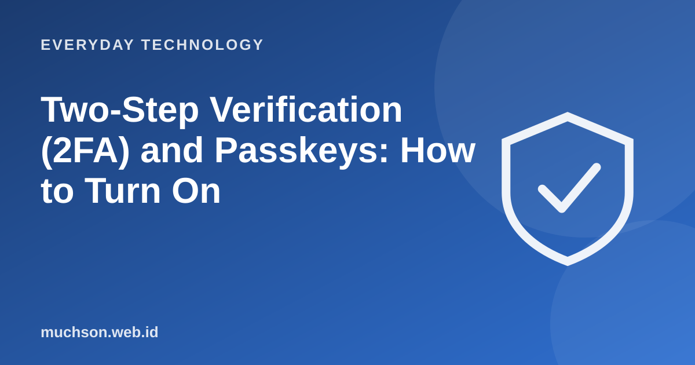

Home › Articles › Everyday Technology
Everyday TechnologyTwo-Step Verification (2FA) and Passkeys: How to Turn On
A password alone is no longer enough. Two-step verification adds one more layer: even if a criminal gets your password, they still need something only you have. Turning it on takes a few minutes.

How it works
Text description of the diagram
- Something you know: the password
- Something you have: phone, key, app
- Sign-in succeeds: both factors match
Kinds of second factor
Accounts to turn it on for first
Don't forget
Keep recovery codes (backup codes) somewhere safe, apart from your phone. If you lose your phone without those codes, you can be locked out of your own account.
Don't share the code
Never share a verification code with anyone, including someone claiming to be an official. Scammers often ask for the code to get into your account.
FAQ
Can 2FA be broken?
Nothing is absolute, but it stops most mass attacks. Watch out for scams that get you to hand over the code.
What if I change phones?
Move the authenticator following the app's instructions before you sell or reset the old phone, and have the recovery codes ready.
What is a passkey?
A cryptographic replacement for a password, stored on a device or in a password manager and unlocked with biometrics or a PIN.